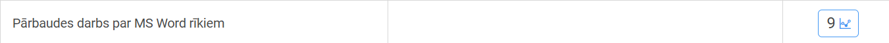

Šeit ir apkopoti visi darbi, ko esmu veicis šogad datorikā. Nu vismaz tie, ko esmu atradis :/
GIMP
Lietotni GIMP mēs lietojam, lai apgūt attēlu apstrādi un rastrgrafiku. Paceļam arī gifus aiztikam. To, kas sanāca, var apskatīt drusciņ zemāk.

Exel
Šajā lietotnē mums bija parbaudes darbs. Domājam kaut kādas formulas, cipariņu, tabulas un bla bla bla.
Atzīmes joprojām nav, jo kādi dandaļi nevarēja uzrakstīt parbaudes darbu.
Word
Šajā lietotnē mums arī bija parbaudes darbs, bet šoreiz burtiņi un ir atzīme.
Vektorgrafika un 3D modelēšana
Nu šeit jau kruti. Vajadzēja ieslēgt smadzenes un radošumu. Te mēs katrs domājam savu logo variantu un modelējam beigu produkta daļiņu.
Montēšana
Mums bija jāuzfilmē un jāsamontē video par veikto darbu. To var apskatīt tepat.